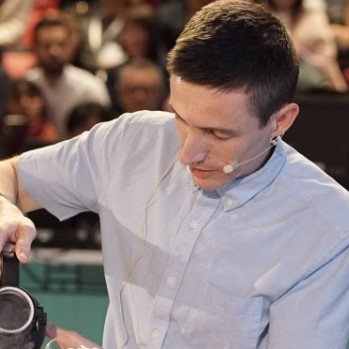
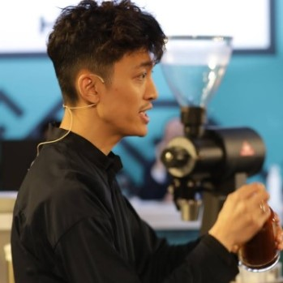

Hugh es sin duda uno de los baristas mas reconocidos en todo el
mundo, teniendo titulos muy importantes respaldandolo, tiene
tecnicas para hacer cada cafe realmente increibles como por ejemplo
utilizar el molino K30 con una molienda que le permitiera tener
partículas de menos de 600 micrones. Además utiliza 12 gramos de
café para extraer 50 gramos, según explica para elevar las notas
florales. Utiliza 7 ml de un sirope de grosella negra infusionado
durante 15 horas para resaltar las notas a cereza y ahora viene lo
más interesante. Para agregarle dulzor a la bebida decide hacer un
mezcla 50-50 de azúcar crudo con miel “Manuka” , pero decide darle
un rápido toque de calor creando algodón de azúcar. Así es, en media
presentación hace algodón de azúcar y agrega exactamente 0.6 gramos
sobre un V60 con filtro y agrega los espressos. Sus descriptores
incluyen jazmín, pétalos de rosa y durazno.

Ben desde luego tambien es un excelente barista, ha ganado hasta
campeonatos, hablando un poco de sus tecnicas podemos decir que su
bebida con leche tiene un concepto similar al de Hugh Kelly.
Eliminar el agua de la leche para que esta sea más intensa y dulce,
pero el proceso utilizado por Putt es el de destilación por
congelación. Los descriptores: banano, trufa de chocolate, crema
irlandesa y licor de cereza. Entre la preparación del los espressos
y la bebida con leche, Ben inició su preparación de la bebida
original. Utilizando 2 espressos de su café proceso natural, agregó
un agua tónica de toronja, hecha por él mismo, agua de rosas y lo
congeló utilizando nitrógeno líquido. Una vez servida la bebida con
leche, continuó con su bebida. Agregó los mismos ingredientes a sus
espressos de proceso lavado pero estos no los congeló, sino que le
pidió a los jueces incorporarlos a la bebida congelada y removerlo
hasta que se deshiciera los espressos congelados.

El representante de Hong Kong, veterano en el rubro, no deja de
sorprender con sus iniguanables Geishas (Cafe de primera calidad),
La variedad se llama Geisha 931, cultivado entre los 1900 y 2100
msnm, y la eligió porque se asemeja al Geisha panameño con sus notas
intensas florales. Indica que este café tiene notas dulces como a
frutas tropicales, ya que éste es secado durante tres semanas bajo
sombra. Su espresso es preparado con 20 gramos para extraer 45
gramos, y este es un dato que nunca había escuchado mencionar: tiene
un velocidad de flujo de 3 gramos por segundo. Sus descritores
incluyen mango confitado, miel de flor de naranjo, y mango en el
primer sorbo. El segundo sorbo incluye maracuyá y uvas blancas. Por
último, el tercer sorbo tiene un sabor de vino blanco. Su bebida con
leche tiene una relación de 1 a 4. La proporción de su espresso
cambia a 24 gramos de café para extraer 40 gramos. Utilizó una leche
de Japón que complementa muy bien la acidez de su café.